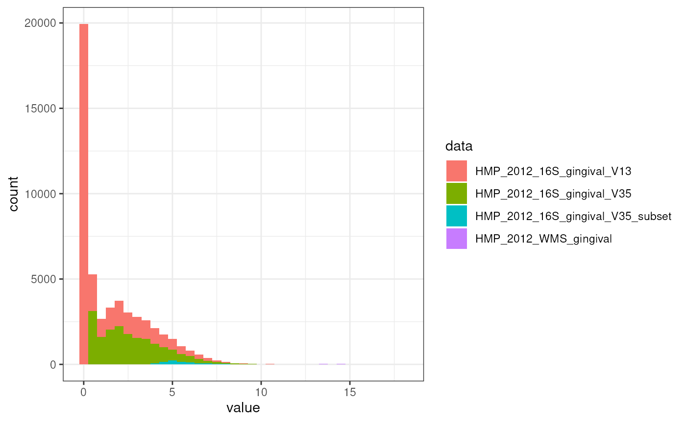

vignettes/articles/compare_gingival_plaque.Rmd
compare_gingival_plaque.Rmd
library(MicrobiomeBenchmarkDataAnalyses)
library(MicrobiomeBenchmarkData)
library(dplyr)
library(purrr)
library(tidyr)
library(ggplot2)
l <- getBenchmarkData(dryrun = FALSE)
#> adding rname 'https://zenodo.org/record/6911027/files/HMP_2012_16S_gingival_V13_count_matrix.tsv'
#> adding rname 'https://zenodo.org/record/6911027/files/HMP_2012_16S_gingival_V13_taxonomy_table.tsv'
#> adding rname 'https://zenodo.org/record/6911027/files/HMP_2012_16S_gingival_V13_taxonomy_tree.newick'
#> Finished HMP_2012_16S_gingival_V13.
#> adding rname 'https://zenodo.org/record/6911027/files/HMP_2012_16S_gingival_V35_count_matrix.tsv'
#> adding rname 'https://zenodo.org/record/6911027/files/HMP_2012_16S_gingival_V35_taxonomy_table.tsv'
#> adding rname 'https://zenodo.org/record/6911027/files/HMP_2012_16S_gingival_V35_taxonomy_tree.newick'
#> Finished HMP_2012_16S_gingival_V35.
#> adding rname 'https://zenodo.org/record/6911027/files/HMP_2012_16S_gingival_V35_subset_count_matrix.tsv'
#> adding rname 'https://zenodo.org/record/6911027/files/HMP_2012_16S_gingival_V35_subset_taxonomy_table.tsv'
#> adding rname 'https://zenodo.org/record/6911027/files/HMP_2012_16S_gingival_V35_subset_taxonomy_tree.newick'
#> Finished HMP_2012_16S_gingival_V35_subset.
#> adding rname 'https://zenodo.org/record/6911027/files/HMP_2012_WMS_gingival_count_matrix.tsv'
#> adding rname 'https://zenodo.org/record/6911027/files/HMP_2012_WMS_gingival_taxonomy_table.tsv'
#> adding rname 'https://zenodo.org/record/6911027/files/HMP_2012_WMS_gingival_taxonomy_tree.newick'
#> Finished HMP_2012_WMS_gingival.
#> adding rname 'https://zenodo.org/record/6911027/files/Ravel_2011_16S_BV_count_matrix.tsv'
#> adding rname 'https://zenodo.org/record/6911027/files/Ravel_2011_16S_BV_taxonomy_table.tsv'
#> Warning: No taxonomy_tree available for Ravel_2011_16S_BV.
#> Finished Ravel_2011_16S_BV.
#> adding rname 'https://zenodo.org/record/6911027/files/Stammler_2016_16S_spikein_count_matrix.tsv'
#> adding rname 'https://zenodo.org/record/6911027/files/Stammler_2016_16S_spikein_taxonomy_table.tsv'
#> Warning: No taxonomy_tree available for Stammler_2016_16S_spikein.
#> Finished Stammler_2016_16S_spikein.
l <- l[grep("gingival", names(l))]
mats <- dats <- map(l, assay)
row_sums <- map(mats, ~ {
df <- data.frame(value = rowSums(.x)) |>
tibble::rownames_to_column("feature")
}) |>
bind_rows(.id = "data")
row_sums |>
mutate(value = log(value + 1)) |>
ggplot(aes(value)) +
geom_histogram(aes(fill = data), binwidth = 0.5) +
theme_bw() Sparsity:
map(mats, \(mat) sum(mat == 0) / (nrow(mat) * ncol(mat)))
#> $HMP_2012_16S_gingival_V13
#> [1] 0.9742307
#>
#> $HMP_2012_16S_gingival_V35
#> [1] 0.9358477
#>
#> $HMP_2012_16S_gingival_V35_subset
#> [1] 0.5351664
#>
#> $HMP_2012_WMS_gingival
#> [1] 0.4861702
map(mats, nrow)
#> $HMP_2012_16S_gingival_V13
#> [1] 33127
#>
#> $HMP_2012_16S_gingival_V35
#> [1] 17949
#>
#> $HMP_2012_16S_gingival_V35_subset
#> [1] 892
#>
#> $HMP_2012_WMS_gingival
#> [1] 235